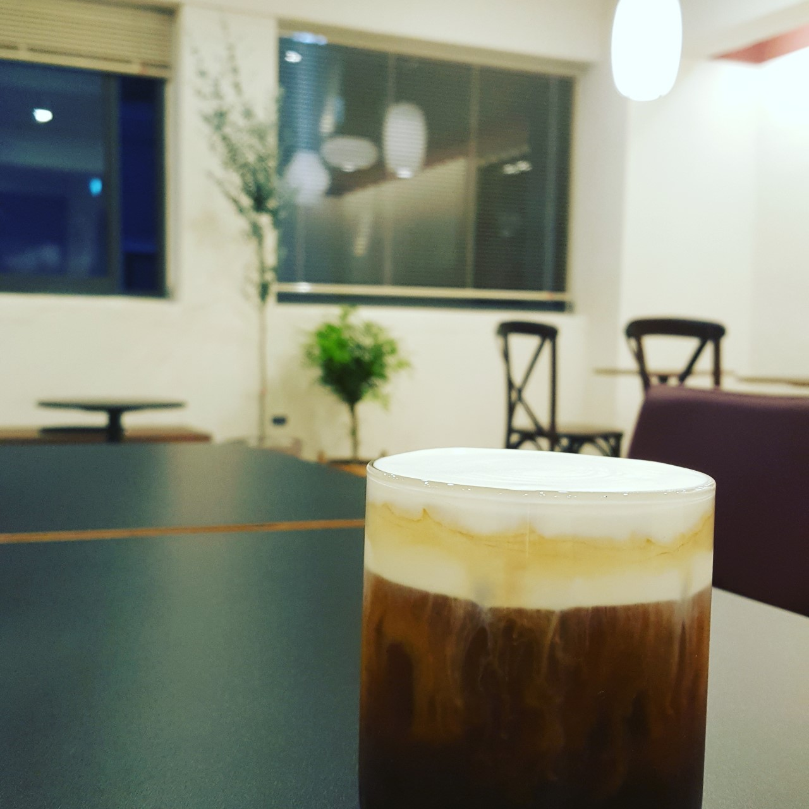

#소재

위치: 서울특별시 성동구 행당동 19-96 3층
영업시간: 평일 11:00~22:30 / 주말(공휴일) 11:30~22:00
주요 메뉴: 아메리카노(4.5) / 카페라떼(5.0) / 바닐라라떼 (5.5) / 아몬드 라떼(5.5)
이모네 북어찜 위에 위치한 카페로 알 사람은 다 아는 카페. 내부가 넓고 쾌적해 팀플이나 시험공부를 하러 찾아오는 한양대생들이 많다. 테이블이 높아 오래 앉아있기 편하고 맛있는 커피와 디저트로 당충전까지 하기 좋다. 한양대역과도 가까워 공강시간에 시간 때우기 좋은 카페.